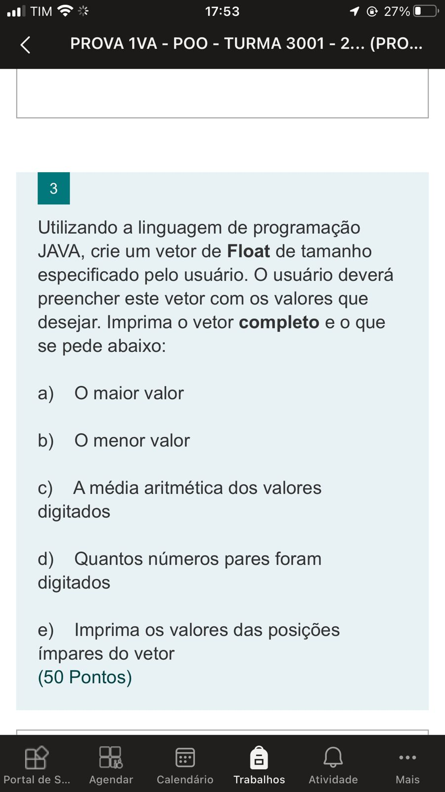

Post #1

De acordo com a Real Academia de Ciências da Suécia, "os economistas revolucionaram a pesquisa empírica nas ciências sociais e melhoraram significativamente a capacidade da comunidade de pesquisa de responder a perguntas de grande importância".
David Card recebeu o prêmio por suas contribuições empíricas para a economia do trabalho. Já Joshua D. Angrist e Guido W. Imbens foram laureados por suas contribuições metodológicas para a análise das relações de causa e efeito.